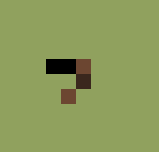

back to sim
conway machine
what's a spaceship?
Note: update delay (in millis)
is dependent on processing power.
John Horton Conway's Game of Life was devised in the late 1960s. This is an execution of it built using javascript, with p5.js and p5.dom.js.
Each pixel displayed is recorded in a two-dimensional array as either living or dead (1 or 0).
The game begins with a Seed (e.g. random noise), then each cell within
the grid follows a series of four rules simultaneously with each of their eight neighbouring cells.
These are the four basic rules:
As a non-player game, there is no objective. Feel free to manipulate some of the additional options included in this web simulation.
You may notice that some groups of living cells appear to translate themselves across the screen.
These are nicknamed spaceships. The smallest of these is the 'glider'.
You can probably find out more online by googling them.
